A1.2 × A2 · seleção compacta Quadros reais nos mesmos ticks/ângulos. Não substitui reprodução 1× do comparador completo. Direções sem clipes permanecem fallback. Aprovação estética pendente.
walk · side · 2s 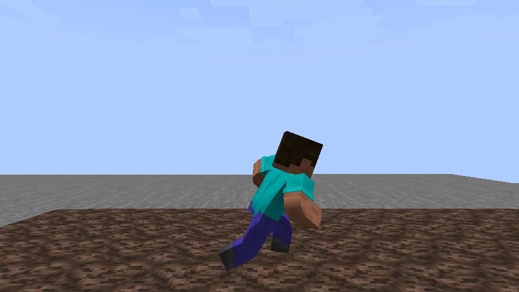
before · UAL_jog · 2s 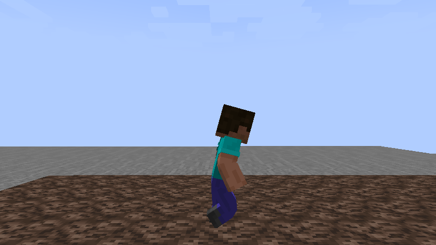
after · UAL_walk · 2s sprint · side · 2s 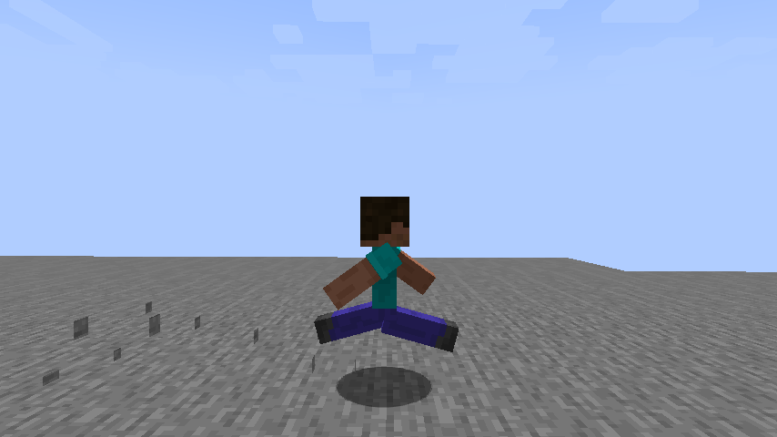
before · FALLBACK · SPRINT · 2s 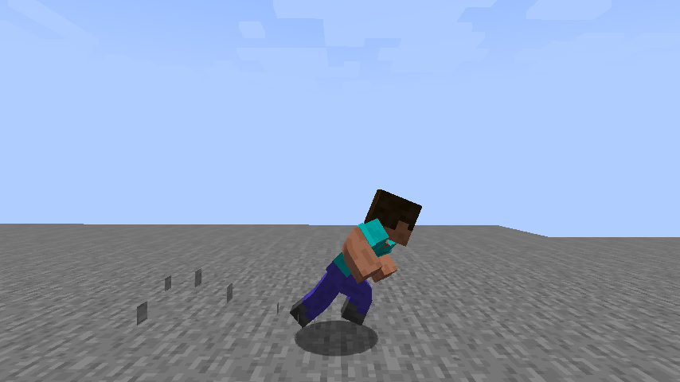
after · UAL_sprint · 2s speed_change · front · 2.4s 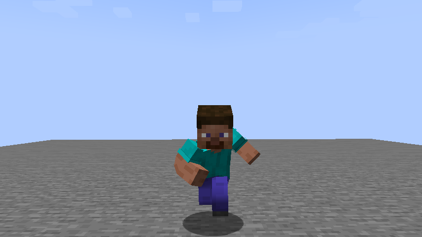
before · UAL_jog · 2.4s 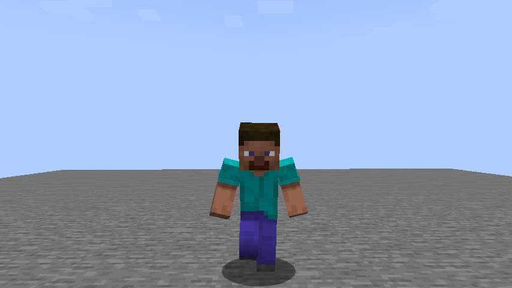
after · UAL_walk · 2.4s speed_change · side · 2.8s 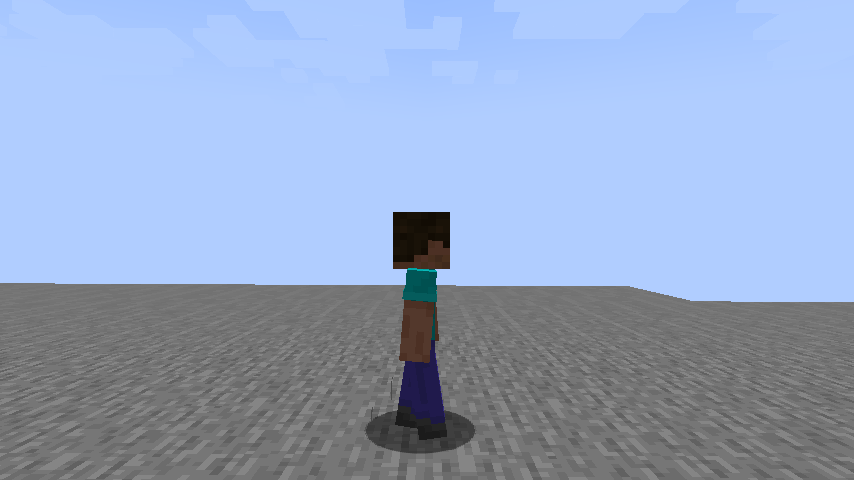
before · FALLBACK · SPRINT · 2.8s 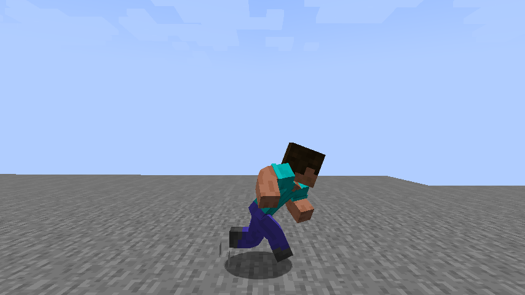
after · UAL_sprint · 2.8s reverse · side · 2.4s 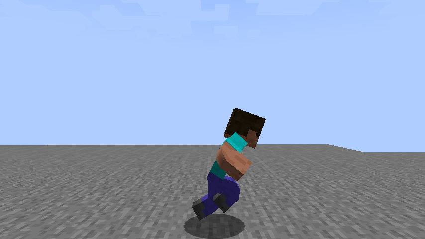
before · UAL_jog · 2.4s 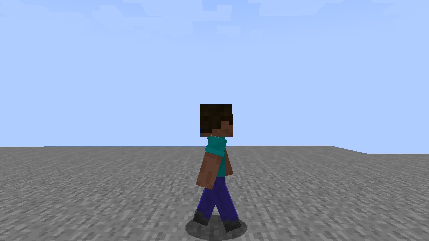
after · UAL_walk · 2.4s backward · back · 2s 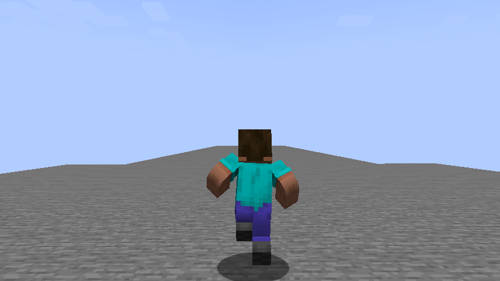
before · UAL_jog · 2s 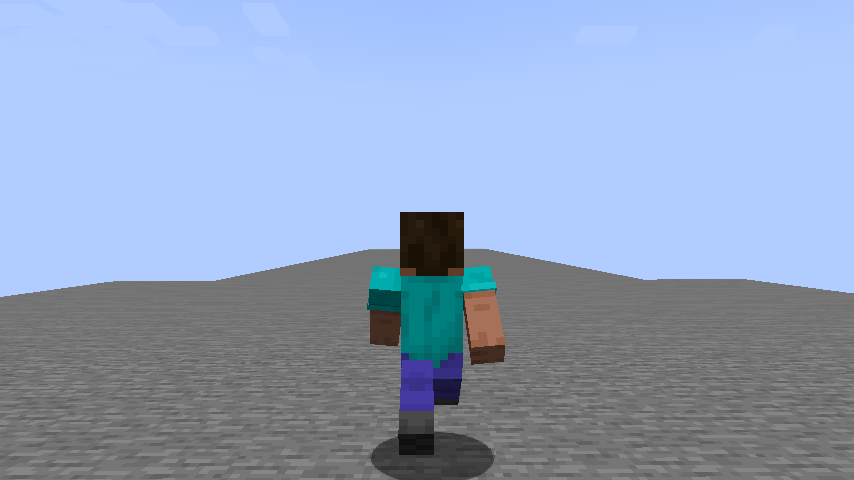
after · FALLBACK · MOVE_BACKWARD · 2s attack_return · side · 1.6s 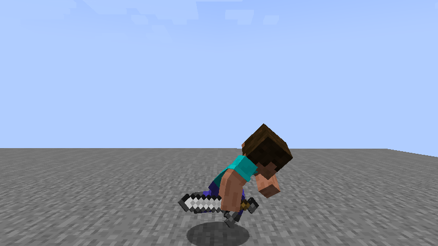
before · UAL_sword · 1.6s 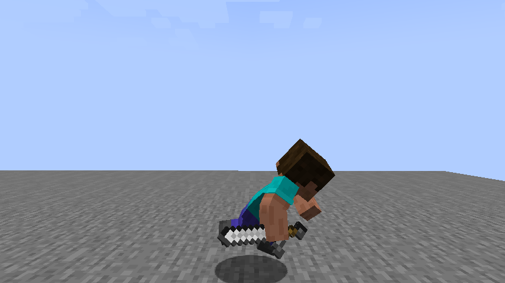
after · UAL_sword · 1.6s attack_return · side · 2.4s 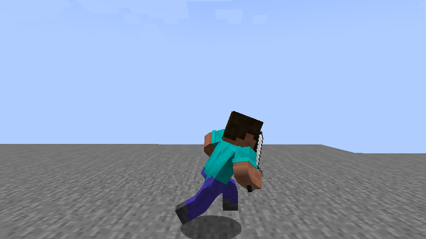
before · UAL_jog · 2.4s 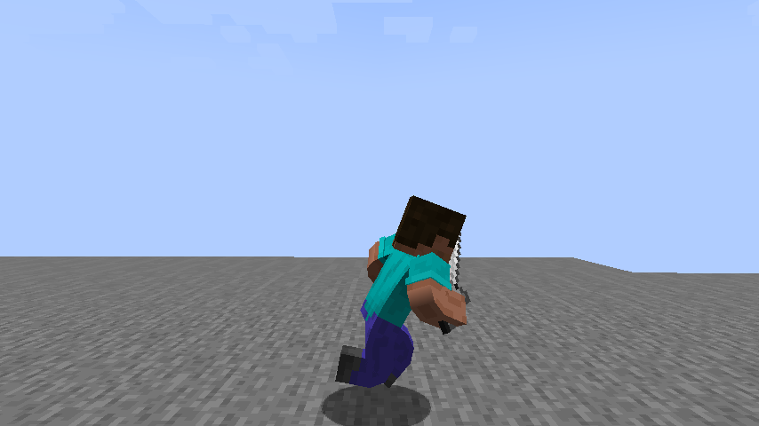
after · UAL_jog · 2.4s roll_return · side · 1.6s 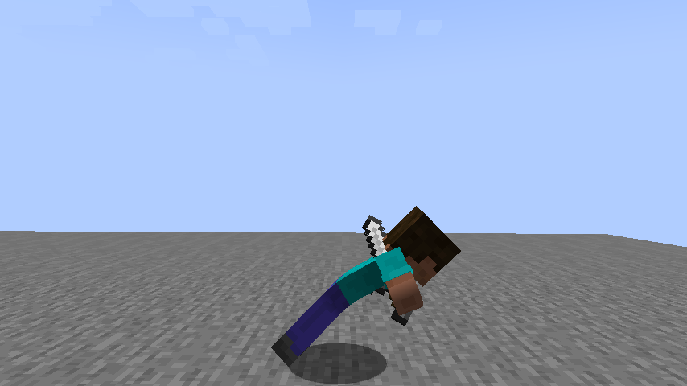
before · UAL_roll · 1.6s 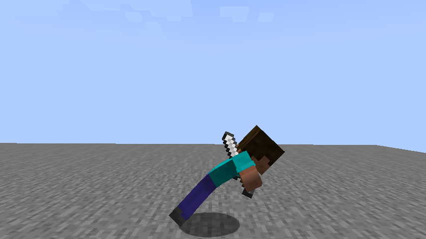
after · UAL_roll · 1.6s roll_return · side · 3.2s 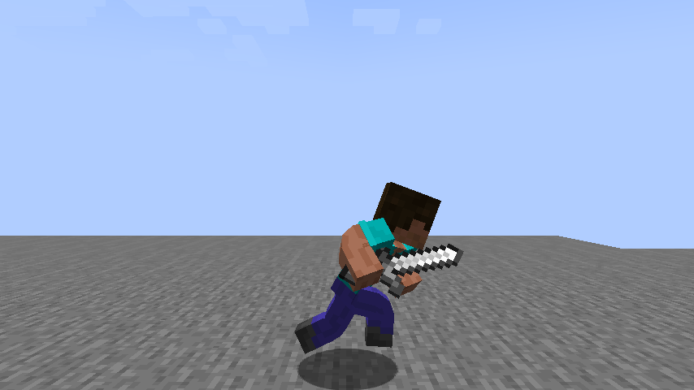
before · UAL_jog · 3.2s 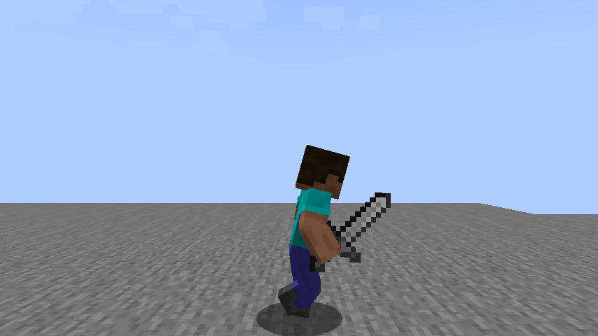
after · UAL_walk · 3.2s uneven · side · 2.2s 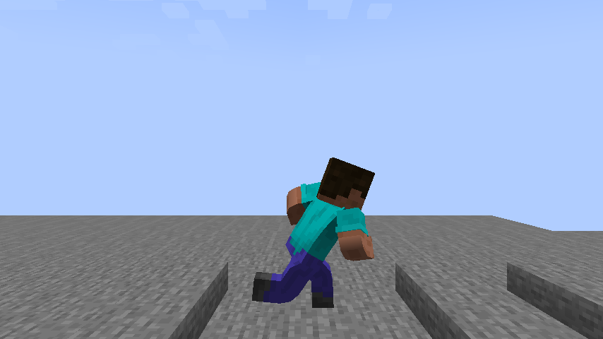
before · UAL_jog · 2.2s 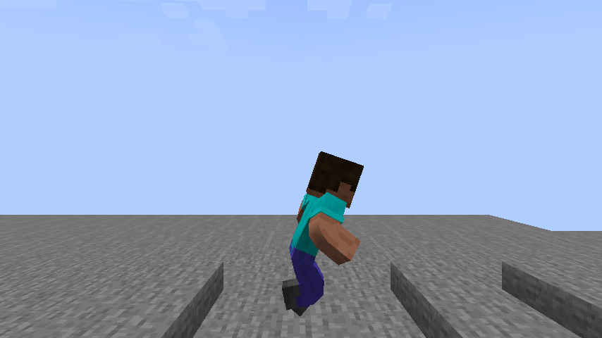
after · UAL_jog · 2.2s gait_cycle · side · 3.2s 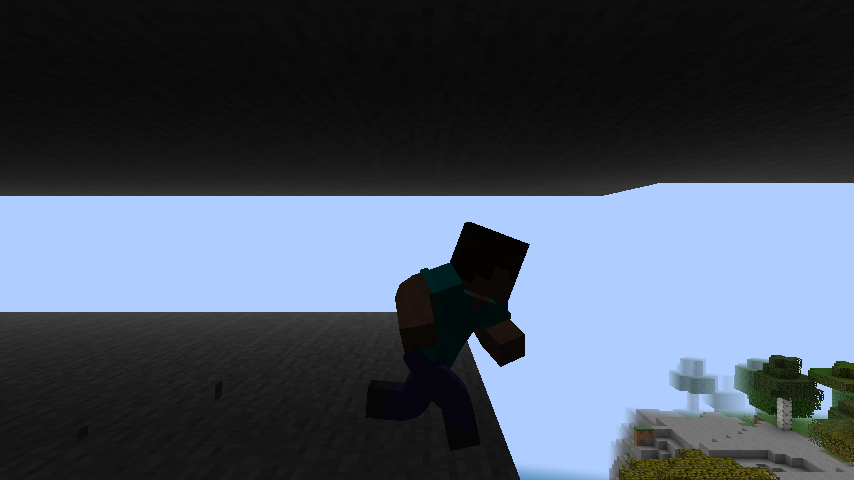
before · UAL_jog · 3.2s 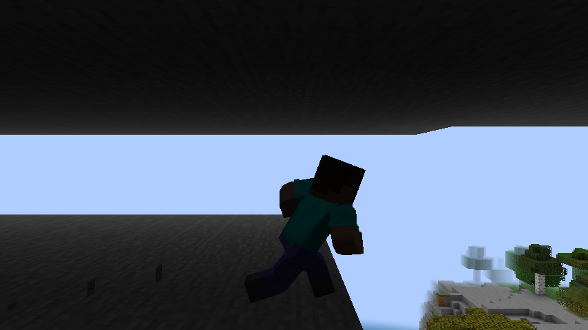
after · UAL_jog · 3.2s